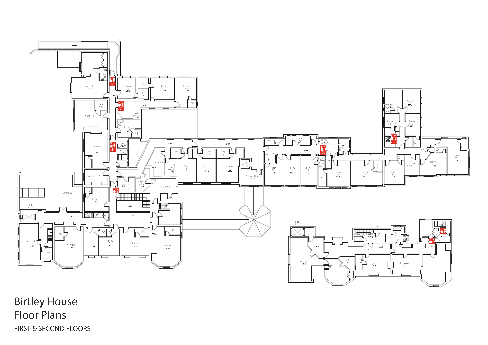

<!DOCTYPE html>
<html lang="en">
  <head>
    <script src="/head.js"></script>
    <title></title>
    <script type="application/ld+json" id="coaches">
    {
      "@context": "http://schema.org",
      "@type": "ItemList",
        "mainEntityOfPage": {
           "@type": "WebPage",
           "@id": "https://bhdirectory.github.io/asset/fire-register/alarm-system/index.html",
             "breadcrumb": "Birtley House Directory > Fire Door Arrangements",
             "author": { "@type": "Organization", "@id": "https://www.datatrain.co.uk/#organisation", "name": "DataTrain", "url": "https://www.datatrain.co.uk/" },
             "dateCreated": "2019-10-02",
             "dateModified": "2019-10-02",
             "isPartOf": { "@id": "https://bhdirectory.github.io/#directory", "name": "Birtley House Directory", "url": "https://bhdirectory.github.io/" },
             "headline": "Fire Alarm System Index"
        },
        "numberOfItems": 6,
        "itemListElement": [
          {
            "@type": "ListItem",
            "position": "0",
            "item": {
              "@id": "https://bhdirectory.github.io/asset/fire-register/alarm-system/#call-points",
              "name": "Call Points Register",
              "url": "https://bhdirectory.github.io/asset/fire-register/alarm-system/call-points/"
            }
          },
          {
            "@type": "ListItem",
            "position": "1",
            "item": {
              "@id": "https://bhdirectory.github.io/asset/fire-register/alarm-system/#zones",
              "name": "Zone Register",
              "url": "https://bhdirectory.github.io/asset/fire-register/alarm-system/zones/"
            }
          },
          {
            "@type": "ListItem",
            "position": "2",
            "item": {
              "@id": "https://bhdirectory.github.io/asset/fire-register/alarm-system/#loop-1",
              "name": "Loop 1 Devices Register",
              "url": "https://bhdirectory.github.io/asset/fire-register/alarm-system/loop-1/"
            }
          },
          {
            "@type": "ListItem",
            "position": "3",
            "item": {
              "@id": "https://bhdirectory.github.io/asset/fire-register/alarm-system/#loop-2",
              "name": "Loop 2 Devices Register",
              "url": "https://bhdirectory.github.io/asset/fire-register/alarm-system/loop-2/"
            }
          },
          {
            "@type": "ListItem",
            "position": "4",
            "item": {
              "@id": "https://bhdirectory.github.io/asset/fire-register/alarm-system/#loop-3",
              "name": "Loop 3 Devices Register",
              "url": "https://bhdirectory.github.io/asset/fire-register/alarm-system/loop-3/"
            }
          },
          {
            "@type": "ListItem",
            "position": "5",
            "item": {
              "@id": "https://bhdirectory.github.io/asset/fire-register/alarm-system/#loop-4",
              "name": "Loop 4 Devices Register",
              "url": "https://bhdirectory.github.io/asset/fire-register/alarm-system/loop-4/"
            }
          }
        ]

    }
    </script>
  </head>
    <body>
      <div class="grid">
        <header>
          <script src="/header.js"></script>
          <h3 id="headerTitle"></h3>
            <aside>
              <p>The fire alarm system is tested every Wednesday afternoon around 4pm.  During this test, the alarm will sound twice.  The first alarm will last just a few seconds and is intended to test the function of the system and the operation of the alarm bell.  The second test last for around 45 seconds and is designed to trigger all acoustically operated fire door closers to ensure their correct operation.  For further details, please see the <a href="qa/test-procedure.html">test procedure</a>.</p>
              <div>
                </img>
                </img>
              </div>
              <div id="divCentre">
                <a class="linkButton" href="qa/">QUALITY ASSURANCE RECORDS</a>
              </div>
            </aside>
            <nav class="grid-container">
              <a class="grid-item" href="#" id="a0"></a>
              <a class="grid-item" href="#" id="a1"></a>
              <a class="grid-item" href="#" id="a2"></a>
              <a class="grid-item" href="#" id="a3"></a>
              <a class="grid-item" href="#" id="a4"></a>
              <a class="grid-item" href="#" id="a5"></a>
            </nav>

            <footer>
              <script src="/footer.js"></script>
              <script src="dataCouplerIndex.js"></script>
            </footer>
        </div>
    </body>
  </html>
